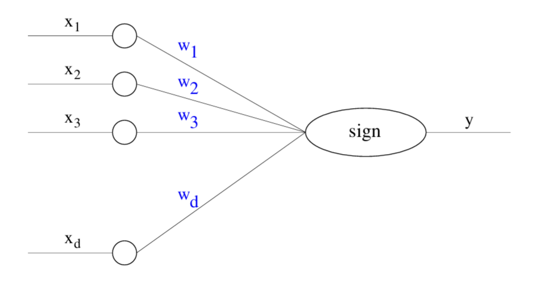
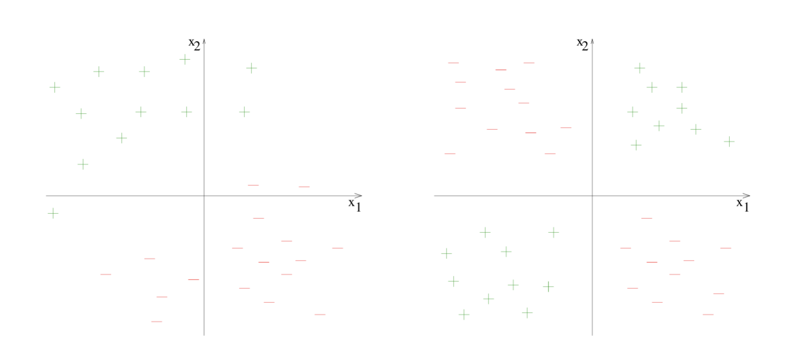

Nov 2025. Mindscape 336 | Anil Ananthaswamy on the Mathematics of Neural Nets and AI
24 Nov 2025.
The Perceptron Learning Algorithm and its Convergence
Perceptron
The Perceptron, introduced by Rosenblatt, can be viewed as a parameterized function that takes a real-valued vector as input and produces a Boolean output. In this section, we are discussing the classical single-layer perceptron: one linear scoring layer followed by a threshold. The output is obtained by thresholding a linear score; the model parameters are exactly the coefficients of that linear function.
For dimension \(d \geq 1\), a \(d\)-dimensional perceptron has parameter vector \(\mathbf{w} \in \mathbb{R}^d\). Given input \(\mathbf{x} \in \mathbb{R}^d\), it computes
where for \(\alpha \in \mathbb{R}\),

Coordinate notation in the figure
In the Perceptron figure, labels such as \(w_1, w_2, w_3, \ldots\) refer to the coordinates of the single weight vector \(\mathbf{w}\) in \(d\)-dimensional space. For example, \(\mathbf{w} = (w_1, w_2, \ldots, w_d)\). This is different from the later notation \(\mathbf{w}_1, \mathbf{w}_2, \ldots\), where the subscript indexes successive weight vectors produced by the algorithm.
It is common to include an additive bias term \(b \in \mathbb{R}\) in the linear score, so the perceptron output becomes
We proceed without an explicit bias term, since we can absorb it into an augmented input. Define
Then
The significance of the Perceptron lies in its use as a device for learning.
Consider the figure below.

It is apparent that in the figure on the left, we may draw a line such that all the points labeled \(+\) lie to one side of the line, and all the points labeled \(-\) lie to the other side. It is also apparent that no line with the same property may be drawn for the set of labeled points shown on the right. The property in question is linear separability. More generally, in \(d\)-dimensional space, a set of points with labels in \(\{+, -\}\) is linearly separable if there exists a hyperplane in the same space such that all the points labeled \(+\) lie to one side of the hyperplane, and all the points labeled \(-\) lie to the other side of the hyperplane.
Given a set of points labeled in \(\{+, -\}\), the Perceptron Learning Algorithm is an iterative procedure to update the weights of a Perceptron such that eventually the corresponding hyperplane contains all the points labeled \(+\) on one side, and all the points labeled \(-\) on the other. We adopt the convention that the points labeled \(+\) must lie on the side of the hyperplane to which its normal points.
Perceptron Learning Algorithm
The input to the Perceptron Learning Algorithm is a data set of \(n \geq 1\) points, each \(d\)-dimensional, and their associated labels in \(\{+, -\}\). For mathematical convenience, we associate the \(+\) label with the number \(1\), and the \(-\) label with the number \(-1\). Hence, we may take our input to be
where for \(i \in \{1, 2, \ldots, n\}\), \(\mathbf{x}^{(i)} \in \mathbb{R}^d\) and \(y^{(i)} \in \{-1, 1\}\).
To entertain any hope of our algorithm succeeding, we must assume that our input data points are linearly separable. Consistent with our choice of ignoring the bias term in the Perceptron, we shall assume that not only are the input data points linearly separable, they can indeed be separated by a hyperplane that passes through the origin.
Assumption 1 (Linear Separability): There exists some \(\mathbf{w}^* \in \mathbb{R}^d\) such that \(\|\mathbf{w}^*\| = 1\) and, for some \(\gamma > 0\), for all \(i \in \{1, 2, \ldots, n\}\),
Taking \(\mathbf{w}^*\) to be unit-length is not strictly necessary; it merely simplifies our subsequent analysis. Geometrically, \(\mathbf{w}^*\) is the normal vector to a separating hyperplane through the origin. The direction of \(\mathbf{w}^*\) determines which side of the hyperplane is considered positive. Points for which \(\mathbf{w}^* \cdot \mathbf{x} > 0\) lie on the side toward which \(\mathbf{w}^*\) points, so they are predicted to have label \(+1\), while points for which \(\mathbf{w}^* \cdot \mathbf{x} < 0\) lie on the opposite side and are predicted to have label \(-1\).
Requiring \(y^{(i)}(\mathbf{w}^* \cdot \mathbf{x}^{(i)})\) to be strictly positive, and in fact greater than \(\gamma\), means there is a positive margin between the data set and the separating hyperplane; none of the data points lie on the hyperplane itself.
Assumption 2 (Bounded Coordinates): There exists \(R \in \mathbb{R}\) such that for all \(i \in \{1, 2, \ldots, n\}\),
Naturally, the Perceptron Learning Algorithm itself does not explicitly know \(\mathbf{w}^*\), \(\gamma\), or \(R\), although \(R\) can be inferred from the data. These quantities are merely useful artifacts we have defined in order to aid our subsequent analysis of the algorithm.
Perceptron Learning Algorithm pseudocode:
Iteration notation
The vectors \(\mathbf{w}_1, \mathbf{w}_2, \mathbf{w}_3, \ldots, \mathbf{w}_k\) are the successive weight vectors produced by the algorithm. The subscript \(k\) indexes the iteration number; it does not refer to the \(k\)th coordinate of a single vector \(\mathbf{w}\).
- Set \(k \leftarrow 1\) and \(\mathbf{w}_k \leftarrow \mathbf{0}\).
-
While there exists some \(i \in \{1, 2, \ldots, n\}\) such that
\[y^{(i)}\bigl(\mathbf{w}_k \cdot \mathbf{x}^{(i)}\bigr) \leq 0,\]pick an arbitrary \(j \in \{1, 2, \ldots, n\}\) such that
\[y^{(j)}\bigl(\mathbf{w}_k \cdot \mathbf{x}^{(j)}\bigr) \leq 0,\]and update
\[\mathbf{w}_{k+1} \leftarrow \mathbf{w}_k + y^{(j)}\mathbf{x}^{(j)}.\] -
Set \(k \leftarrow k + 1\) and repeat the while loop.
- Return \(\mathbf{w}_k\).
Here is the step-by-step explanation. We start with the zero vector, so initially the Perceptron has no preferred separating direction. At each iteration, we look for a data point that is currently misclassified, or exactly on the decision boundary. Once we find such a point \(\mathbf{x}^{(j)}\), we adjust the weight vector in the direction that would classify it more correctly. If \(y^{(j)} = 1\), we add \(\mathbf{x}^{(j)}\), nudging \(\mathbf{w}_k\) toward the positive example. If \(y^{(j)} = -1\), we subtract \(\mathbf{x}^{(j)}\), nudging \(\mathbf{w}_k\) away from the negative example.
The while loop continues as long as there exists some point such that,
If \(y^{(i)} = 1\), then we want (in order to break the while loop) \(\mathbf{w}_k \cdot \mathbf{x}^{(i)} > 0\); if \(y^{(i)} = -1\), then we want (in order to break the while loop) \(\mathbf{w}_k \cdot \mathbf{x}^{(i)} < 0\). The while loop breaks when for every \(i \in \{1, 2, \ldots, n\}\),
That is the final condition we want: the hyperplane normal to \(\mathbf{w}_k\) separates the data according to their labels, with every positive example on the side toward which \(\mathbf{w}_k\) points and every negative example on the opposite side.
Analysis
Theorem (Perceptron Convergence): The Perceptron Learning Algorithm makes at most \(\dfrac{R^2}{\gamma^2}\) updates, after which it returns a separating hyperplane.
Proof. It is immediate from the code that if the algorithm terminates and returns a weight vector, then that weight vector separates the positive points from the negative points. Thus, it suffices to show that the algorithm terminates after at most \(\dfrac{R^2}{\gamma^2}\) updates. In other words, we need to show that the number of updates is upper-bounded by \(\dfrac{R^2}{\gamma^2}\). Our strategy is to derive both a lower bound and an upper bound on the magnitude of \(\mathbf{w}_{k+1}\) in terms of \(k\), where \(k\) is the number of updates made so far, and then compare the two bounds.
First note that \(\mathbf{w}_1 = \mathbf{0}\). For \(k \geq 1\), suppose \(\mathbf{x}^{(j)}\) is the misclassified point chosen during iteration \(k\). Then
The final inequality uses Assumption 1, since \(y^{(j)}(\mathbf{w}^* \cdot \mathbf{x}^{(j)}) > \gamma\).
Starting from \(\mathbf{w}_1 \cdot \mathbf{w}^* = 0\), each update increases this dot product by more than \(\gamma\). After \(k\) updates, the accumulated increase is therefore more than \(k\gamma\), so by induction,
Since \(\|\mathbf{w}^*\| = 1\), the Cauchy-Schwarz inequality gives
Therefore,
Now we derive an upper bound. Again, let \(\mathbf{x}^{(j)}\) be the point chosen during iteration \(k\). Then
The first inequality uses the fact that \(\mathbf{x}^{(j)}\) was chosen because it continued the while loop, so \(y^{(j)}(\mathbf{w}_k \cdot \mathbf{x}^{(j)}) \leq 0\). The second inequality uses Assumption 2.
Starting from \(\|\mathbf{w}_1\|^2 = 0\), each update increases the squared norm by at most \(R^2\). After \(k\) updates, the squared norm is therefore at most \(kR^2\), so by induction,
Combining (1) and (2), we get
For \(k > 0\), this implies
So the algorithm can make at most \(\dfrac{R^2}{\gamma^2}\) updates before terminating. Once it terminates, the returned weight vector defines a separating hyperplane. This completes the proof.
The legendary weekend: how Ted Hoff and Bernie Widrow built the first hardware neuron
In the late 1950s, Bernie Widrow was an assistant professor at Stanford. A graduate student named Ted Hoff knocked on his door looking for a PhD project. Over a single afternoon at the blackboard, the two of them sketched out what is now known as the Least Mean Squares (LMS) algorithm, an algebraic update rule for training a single linear neuron.
For a linear unit with weights \(\mathbf{w}\), input \(\mathbf{x}\), output \(y = \mathbf{w}^\top \mathbf{x}\), target \(d\), and error \(e = d - y\), the LMS rule is
In modern terms, this is Stochastic Gradient Descent on the per-sample squared-error loss
To see why, compute the gradient of \(L\) with respect to \(\mathbf{w}\). Treating \(L\) as a composition \(L(y(\mathbf{w}))\) with \(y = \mathbf{w}^\top \mathbf{x}\), the chain rule gives
The two factors are
So
A gradient-descent step with learning rate \(\eta > 0\) is \(\mathbf{w} \leftarrow \mathbf{w} - \eta\, \nabla_{\mathbf{w}}\, L\), which substitutes back to
recovering the LMS rule above. Applying this update one sample at a time, rather than over a full-batch gradient, is exactly stochastic gradient descent. Widrow and Hoff arrived at the same rule via algebra rather than calculus, but the update is identical to SGD on the squared error.
The same evening, Hoff programmed the rule on an analog computer that Lockheed had donated to Stanford, and it worked. With the supply rooms closed for the weekend, the two walked over to a local electronics store, bought components, and built the first hardware artificial neuron in Hoff's apartment. By Monday morning they had a working device, an early ancestor of every artificial neuron in use today.
Hoff later left academia for a startup he was unsure about; Widrow encouraged him to take the offer. The startup turned out to be Intel, where Hoff went on to architect the Intel 4004, the first commercial microprocessor.
Why sigmoids mattered
Early artificial neurons used a hard threshold activation,
so a unit fired only once its weighted input crossed a threshold. This is non-differentiable: the slope is \(0\) almost everywhere and undefined at the jump. As long as a network only had one trainable layer, that did not matter (the perceptron rule did not need a usable derivative). But once we try to stack layers and train them jointly, every node in the computational graph must be differentiable so that the chain rule can propagate error from the output back to every weight.
In 1986, Rumelhart, Hinton, and Williams published a three-and-a-half-page paper in Nature showing exactly how to do this: the backpropagation algorithm. A key enabling change was replacing the step function with a smooth surrogate— the sigmoid
The sigmoid has the same qualitative shape as the step (saturates near \(0\) for large negative \(z\) and near \(1\) for large positive \(z\)) but is smooth everywhere, so gradients flow through it. Once every layer is differentiable, the chain rule can compute \(\partial L / \partial w\) for every weight \(w\) in the network, and gradient descent can train arbitrarily deep architectures.
Sigmoids today
Modern networks rarely use sigmoids in hidden layers because we get vanishing gradients in deep stacks. Activations like ReLU (\(\max(0, z)\)) and its variants have largely replaced them in hidden layers, while sigmoid and softmax remain standard for output layers that produce probabilities. The conceptual shift, though, was sigmoid's. Differentiability everywhere is what made deep learning trainable.
The curse of dimensionality
The curse of dimensionality predates neural networks. The cleanest illustration is the \(k\)-nearest neighbors (\(k\)-NN) classifier.
Suppose we represent each \(10 \times 10\) pixel image as a point \(\mathbf{x} \in \mathbb{R}^{100}\) (Spatializing Data). Cats cluster in one region, dogs in another. Given a new image \(\mathbf{x}^*\), \(k\)-NN classifies it by majority vote among the \(k\) closest training points under some distance; usually Euclidean,
Choosing \(k > 1\) smooths over noisy or mislabeled points (a single neighbor causes overfitting). The whole approach assumes that similar points are closer together than dissimilar ones.
In high dimensions, that assumption breaks down. For i.i.d. data in \(\mathbb{R}^n\) with most reasonable distributions, the ratio of the maximum to the minimum pairwise distance concentrates around \(1\) as \(n \to \infty\):
In other words, every point becomes roughly equidistant from every other point, so "nearest" carries almost no information. Distance-based methods like \(k\)-NN, naïve clustering, and similar stop working.
This matters because dimensionality = number of features. Each pixel of the image was a feature. As we add features we accumulate signal, but we also walk further into the curse, and naïve vector similarity search degrades.
Principal Component Analysis
One way to fight the curse is to reduce dimensions while keeping the structure that matters for the task. Principal Component Analysis (PCA) projects high-dimensional data onto a lower-dimensional subspace chosen to capture as much variance as possible.
PCA helps when the data has low intrinsic dimensionality: most of its variation lies in a few directions of the ambient \(\mathbb{R}^n\), so a small \(k\) retains nearly all the variance. We can then train a classifier on the \(k\)-dim representation, sidestepping the curse. PCA does not help when the data spreads roughly equally in all \(n\) directions.
Kernel methods
Some classification problems are not linearly separable in the input space. A standard cartoon example:
- Red dots cluster near the origin in \(\mathbb{R}^2\).
- Green dots form an annular ring around them.
No straight line in the plane separates the two. But lift the data into \(\mathbb{R}^3\) by appending a third coordinate \(z = x^2 + y^2\):
Now the green ring sits at large \(z\) and the red core at small \(z\), and a horizontal hyperplane \(z = c\) separates them. Projecting the hyperplane back to the plane recovers a nonlinear decision boundary— a circle!
This generalizes. If the original data lives in \(\mathbb{R}^n\) and we lift it via some feature map \(\phi : \mathbb{R}^n \to \mathbb{R}^N\) with \(N \gg n\), a linear classifier in \(\mathbb{R}^N\) becomes a nonlinear classifier in \(\mathbb{R}^n\). The catch is computational: linear classifiers (especially SVMs) depend on data through dot products
Computing \(\phi(\mathbf{x})\) explicitly when \(N\) is a million is expensive; when \(N\) is infinite, it is impossible.
The kernel trick bypasses \(\phi\) entirely. We choose a function \(K : \mathbb{R}^n \times \mathbb{R}^n \to \mathbb{R}\) such that
for some implicit feature map \(\phi\). Whenever the algorithm needs an inner product in the high-dimensional space, we evaluate \(K(\mathbf{x}, \mathbf{y})\) on the original low-dimensional inputs \(\mathbf{x}, \mathbf{y}\). No transformation to \(\phi\) or high-dimensional dot product required!